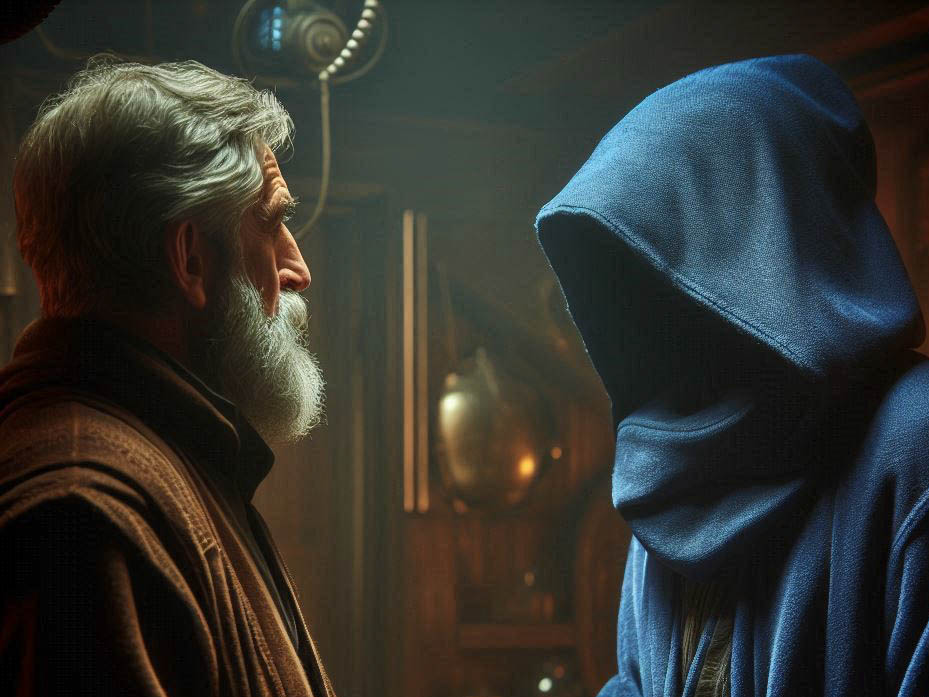
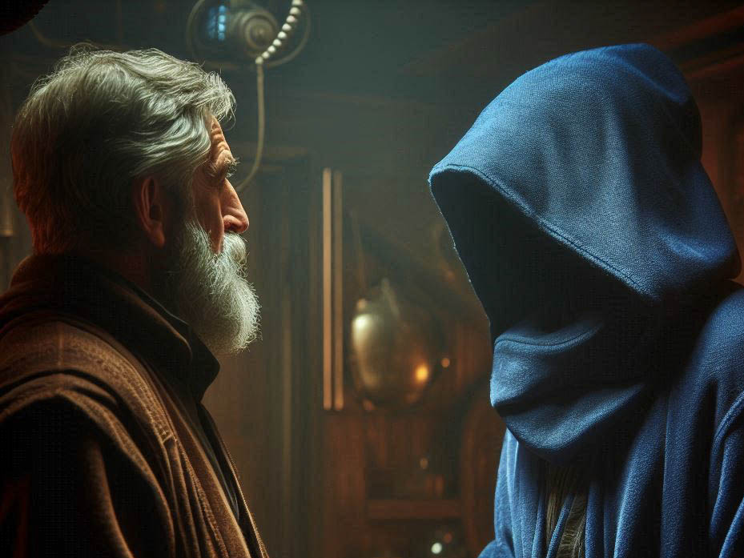

Ältester
Quelle: P1
Der Älteste rät dir nach dem Artefakt in den alten Ruinen zu suchen - er diente vor 200 Zyklen unter dem Supreme Leader von Lumaria und damals versteckte er das Artefakt in den Steinstrukturen der damaligen heiligen Stätte.
Quelle: P1
Der Älteste rät dir nach dem Artefakt in den alten Ruinen zu suchen - er diente vor 200 Zyklen unter dem Supreme Leader von Lumaria und damals versteckte er das Artefakt in den Steinstrukturen der damaligen heiligen Stätte.